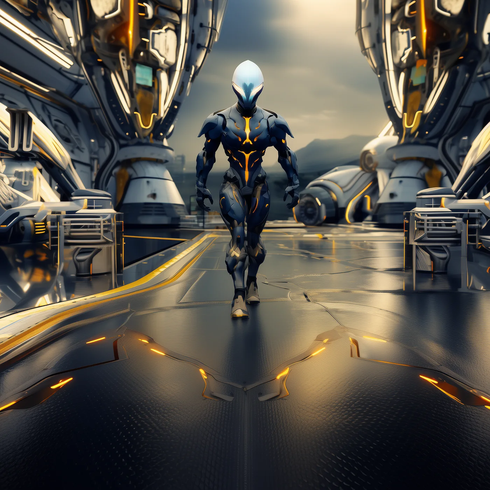
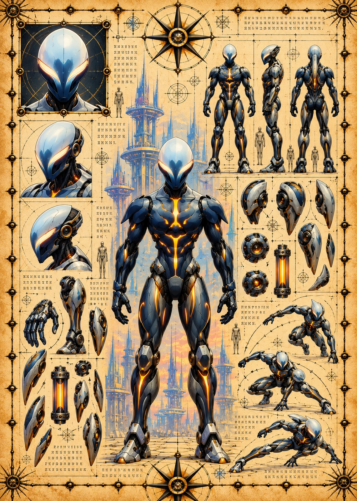

©
©
GENEZYS ARCHIVE · Earth 2 · Synthbot
Exalen
Dusk Reaver

Archive record
Exalen wields a blade forged from darkness itself. The Night Cut keeps bleeding the enemy in the middle and drains those on the edges. Through the Nexus, every Astral pilot feels each cut Exalen makes.
Combat signature
Night Cut
220 Cosmara
160 Animus
160 Vitalis
Slices with blade forged from darkness: Deals 50 damage to the enemy in the middle for 2 turns. Reduces 50 Cosmara of enemies on the edges.
Genezys 08:01 ™&©2026LEGIONS
